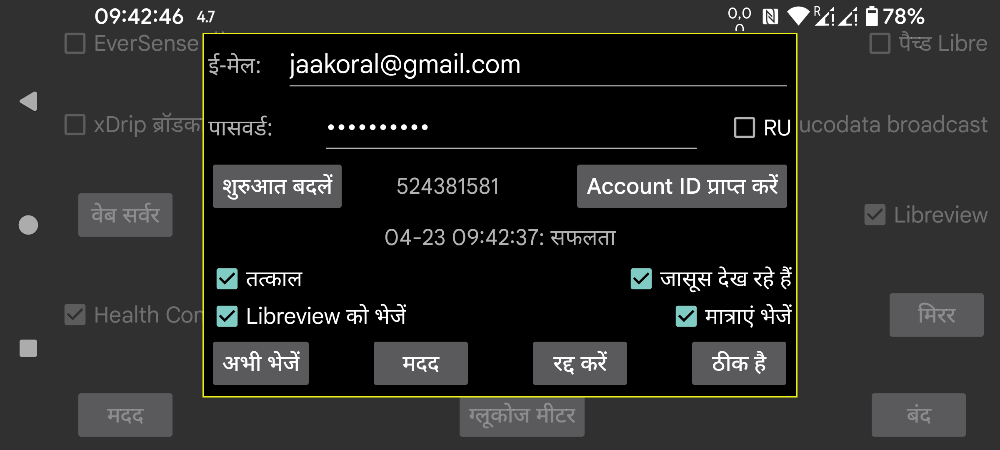

ar be de es fr hi nl pl pt ru tr uk uz zh en
Juggluco Libreview को ग्लूकोज डेटा और मात्राएं भेज सकता है।
Librelink ऐप की तरह, यह पिछले 89 दिनों का डेटा Libreview को भेजता है।
इस सेवा का उपयोग करने के लिए, आपको https://libreview.com पर एक Libreview अकाउंट बनाना होगा और इसका ई-मेल पता और पासवर्ड यहाँ निर्दिष्ट करना होगा। उसी अवधि का डेटा एक ही Libreview अकाउंट को कई बार न भेजें (उदाहरण के लिए Librelink ऐप और Juggluco से)। आप Libreview में मौजूदा डिवाइस Account Settings->My devices में हटा सकते हैं या आप एक नया Libreview अकाउंट ले सकते हैं।
इसे चालू करने के लिए, आपको "Libreview को भेजें" भी चेक करना होगा।
Juggluco हर बार जब आप Juggluco से दूर जाते हैं तो Libreview को नया डेटा भेजेगा जब पिछले 20 मिनट में ऐसा नहीं किया गया था। आप "अभी भेजें" दबाकर इसे मैन्युअल रूप से भी Libreview को भेज सकते हैं।
ग्लूकोज मानों के अलावा, मात्राएं भी Libreview को भेजी जा सकती हैं। इसके लिए आपको "मात्राएं भेजें" छूना होगा और निर्दिष्ट करना होगा कि प्रत्येक लेबल का क्या अर्थ है।
RU: यदि आप https://libreview.com के बजाय https://libreview.ru का उपयोग करते हैं तो आपको इसे सेट करना होगा। यह केवल Libre 2 सेंसर पर लागू होता है। Libre 3 सेंसर केवल libreview.com के साथ उपयोग किए जा सकते हैं, क्योंकि कोई रूसी Abbott Libre 3 ऐप मौजूद नहीं है।
तत्काल: Libre 2 या 3 सेंसर से आते ही ग्लूकोज मानों को तुरंत Libreview को भेजें। यह केवल LibreLinkUp के साथ संयोजन में उपयोगी है। इसका उपयोग करने के लिए आपको Abbott के Libre ऐप्स में से एक में इस Libreview अकाउंट पर एक LibrelinkUp कनेक्शन जोड़ना होगा। (यदि आपके देश में कोई Abbott Libre ऐप नहीं है, तो आप पैच्ड Libre 3 ऐप का उपयोग कर सकते हैं।) कभी-कभी मान तुरंत दिखाई नहीं देता, क्योंकि LibreLinkUp का डिस्प्ले स्वचालित रूप से पुनः नहीं खींचा जाता। यदि आप बहुत ध्यान से नहीं देखते तो LibreLinkup का उपयोग करना काफी खतरनाक है, क्योंकि जब आप ग्राफ़ छूते हैं, तो यह वर्तमान ग्लूकोज मान के बजाय एक पुराना मान दिखाता है।
जासूस देख रहे हैं: जब यह विकल्प सेट होता है, तो Juggluco Libreview को भेजेगा कि एक मान देखा गया है या नहीं। जब यह विकल्प बंद होता है, तो Juggluco हमेशा कहेगा कि इसे नहीं देखा गया। यह विकल्प Libreview को यह जानकारी केवल तभी विश्वसनीय रूप से भेजेगा जब तत्काल भी चालू हो। Libre 3 से सभी दृश्य पकड़ने के लिए Juggluco को लगातार इंटरनेट से जुड़े रहना चाहिए, Libre 2 उन्हें तब तक याद रखता है जब तक यह नष्ट नहीं होता।
शुरुआत बदलें: नए सिरे से शुरू करें; निर्दिष्ट तारीख और समय से डेटा पुनः भेजें। एक नए Libreview अकाउंट पर स्विच करते समय आपको इसे दबाना होगा।
Libreview को भेजने के अंतिम प्रयास का परिणाम "Account ID प्राप्त करें" बटन के नीचे प्रदर्शित होता है।
Libreview अपने विश्लेषण के लिए इतिहास मानों का उपयोग करता है और Juggluco अपनी आंकड़े स्क्रीन (बायां मध्य मेन्यू->आंकड़े) के लिए स्ट्रीम मानों का उपयोग करता है। इस अंतर के कारण Libreview और Juggluco के आंकड़ों के बीच छोटे अंतर होते हैं। क्योंकि स्ट्रीम मान अधिक चरम होते हैं, Juggluco कुछ अधिक नकारात्मक है: श्रेणी में कम समय, अधिक परिवर्तनशीलता। Juggluco के अनुसार समय सेंसर सक्रिय भी छोटा है; यह हर अनुपस्थित स्ट्रीम मान को गिनता है।
Juggluco एक साथ कई सेंसरों से जुड़ सकता है, जबकि Librelink एक बार में केवल एक सेंसर को संभालता है। Juggluco भी Libreview को एक बार में केवल एक सेंसर से डेटा भेजता है। यह पहले एक सेंसर से डेटा भेजकर और उस सेंसर से कोई डेटा उपलब्ध न होने के बाद ही यह करता है, यह अगले सेंसर से डेटा भेजता है। जब Juggluco एक अगले सेंसर पर स्विच किया जाता है, तो Juggluco Librelink की एक-सेंसर नीति का अनुकरण करने के लिए एक पिछले सेंसर पर वापस नहीं जाएगा। इसका मतलब है कि जब आप एक बार में कई सेंसर चलाते हैं और बाद में जोड़ा गया एक पहले जोड़े गए सेंसर से जल्दी समाप्त होता है, तो यह पहले सेंसर अब Libreview को कोई डेटा नहीं भेजेगा।
Account ID प्राप्त करें: यदि आप केवल LibreView account ID प्राप्त करना चाहते हैं, पर Libreview को डेटा नहीं भेजना चाहते, तो आप अपना ई-मेल पता और पासवर्ड भर सकते हैं और "Account ID प्राप्त करें" दबा सकते हैं। इस बटन से पहले एक ही पंक्ति पर, Account ID दिखाया जाएगा (इसमें कुछ समय लग सकता है और स्क्रीन स्वचालित रूप से ताज़ा नहीं होती)। LibreView सर्वर से Account ID प्राप्त करना एक FreeStyle Libre 3 सेंसर का उपयोग करना संभव बनाता है जो पहले से ही इस LibreView अकाउंट के साथ Abbott के Libre 3 ऐप से उपयोग किया गया था।
Libreview account ID नंबर को Libreview रिपोर्ट के एड्रेस बार में प्रदर्शित UUID से भी परिवर्तित किया जा सकता है और Juggluco में मैन्युअल रूप से दर्ज किया जा सकता है।
Sibionics और Dexcom सेंसर का डेटा Libreview को नहीं भेजा जाता।
यदि आप Libreview प्रारूप में डेटा सहेजना चाहते हैं, तो आप यह बायां मध्य मेन्यू→एक्सपोर्ट में या Juggluco में वेब सर्वर में भी कर सकते हैं। Dexcom और Sibionics सेंसर के ग्लूकोज मान भी शामिल हैं।